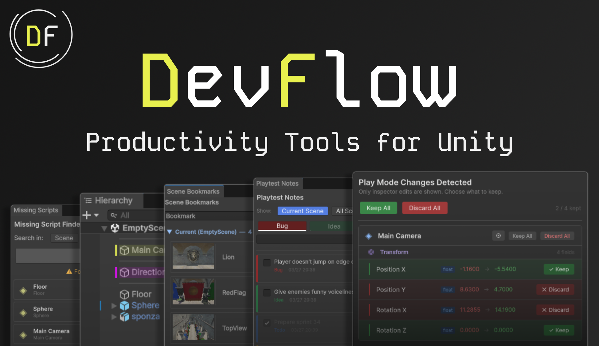
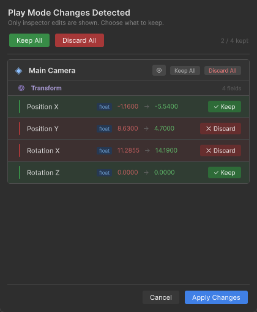
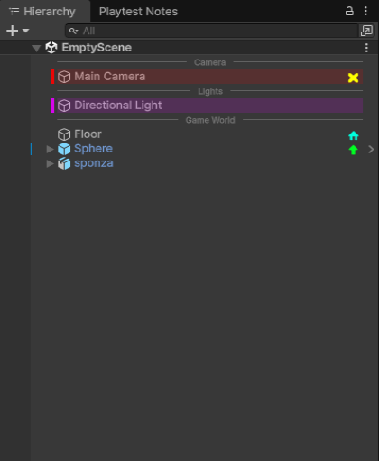
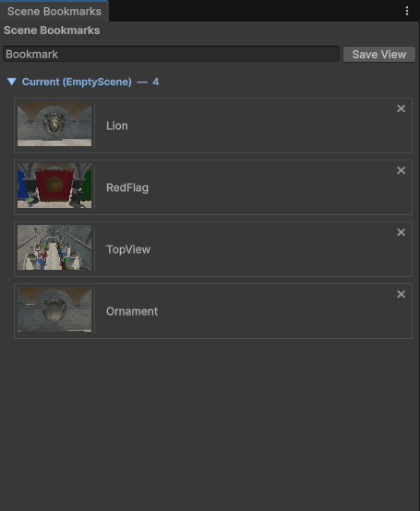
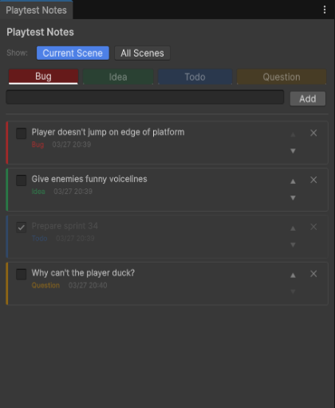

Tool Dev Project

DevFlow is a suite of Unity Editor tools I built under a shared namespace, targeting friction points I kept running into during development. Every tool is editor-only with zero runtime impact.
It came out of a simple observation: time lost to small workflow problems compounds quickly. Losing inspector tweaks after play mode ends. Losing your place in a large scene. DevFlow fixes those things.
When you change a component value in the Inspector during play mode, Unity throws it away the moment you stop. Play Mode Preserver watches for those edits and presents a per-field keep/discard dialog on exit. Changes are grouped by GameObject and component. Transform axes are tracked independently, so you can keep a Y-axis position change and discard X and Z from the same drag.
It hooks into both Undo.postprocessModifications and ObjectChangeEvents to catch
inspector edits and scene-view gizmo drags. On exit, only touched components are serialized while values are still
live, then diffed field by field against a snapshot taken at play mode entry.
Visual separators that divide the hierarchy into named sections, plus per-GameObject row color tinting and icon
badges. Separators are EditorOnly GameObjects that render as a horizontal rule with a centered label
and get stripped from builds entirely. Settings persist to ProjectSettings/ as JSON so they're shared
across the team via source control.
Saves and restores Scene View camera positions with thumbnail previews, grouped by scene. Useful on large scenes where navigating back to a specific area costs real time. Bookmarks store the pivot point, rotation, and zoom level. Cross-scene jumps prompt you to save first, then open the target scene before jumping.
A lightweight note window designed to stay open alongside the game view. Notes are tagged, timestamped, and tied to the active scene at the time of creation. A keyboard shortcut opens a quick-add popup without breaking focus from the game view. Tags are Bug, Idea, Todo, and Question, each color-coded on the note card.
Scans the active scene, all project prefabs, or both for broken MonoBehaviour references and removes them in one click. Results show as clickable cards that ping the object in the hierarchy. Useful after any refactor that moves or renames scripts.
The trickiest part of Play Mode Preserver was giving every GameObject a key that's stable before and after play
mode, even when multiple objects share the same name. I settled on sibling-indexed hierarchy paths:
Root[0]/Child[2]/Grandchild[0]. The bracketed number is the sibling index at each level, which
disambiguates identically named objects. Display paths in the change dialog strip the indices for readability.
All settings go to ProjectSettings/ rather than EditorPrefs. EditorPrefs is
machine-local and can't be shared across a team. The sole exception is the Play Mode Preserver enabled toggle,
stored in SessionState so it resets to enabled on every editor launch and can't be accidentally left
off permanently.
The DevFlowSeparator component hides itself from the Add Component menu using
[AddComponentMenu("")] and self-destructs outside the editor via an [ExecuteInEditMode]
Awake guard. The EditorOnly tag is the build-time safety net, but the guard is there as a second
layer.
Editor or inside an assembly definition scoped to
editor platforms. This ensures no editor code is ever compiled into a game build.



